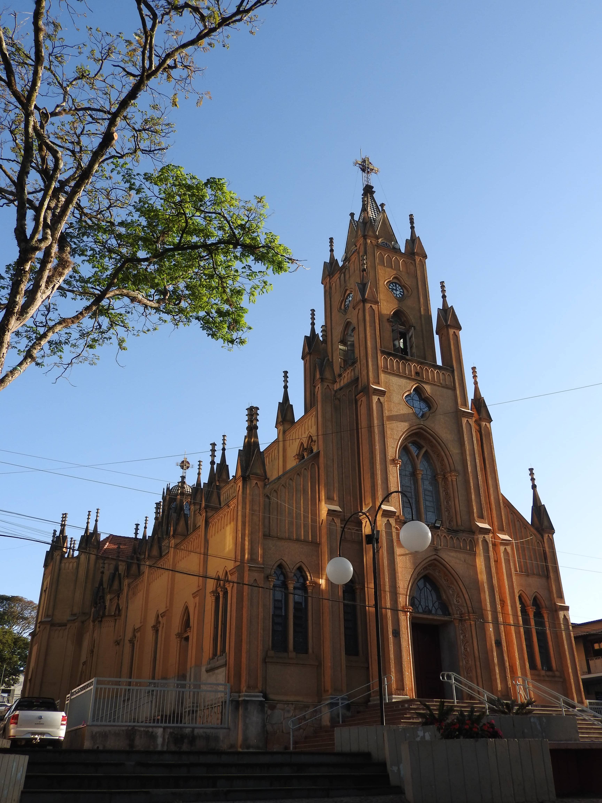

16 de Julho
Festa de Nossa Senhora do Carmo
Novenário e festa em honra à nossa padroeira.
Uma comunidade de fé em Campos Gerais, pertencente à Diocese de Campanha. Bem-vindo à nossa casa espiritual.
A Paróquia Nossa Senhora do Carmo é uma comunidade viva e acolhedora, situada em Campos Gerais, Minas Gerais. Somos parte da Diocese de Campanha e temos como padroeira a Virgem do Carmo.
Aqui você encontra um espaço de oração, formação e comunhão. Venha participar!
Nossa História
Participe das nossas celebrações
Fique por dentro das atividades da paróquia
Novenário e festa em honra à nossa padroeira.
Inscrições abertas. Aulas aos sábados às 15h00.
Quintas às 20h00. Venha fortalecer sua vida espiritual.
"Sobre tudo isto, revesti-vos do amor, que é o vínculo da perfeição."Colossenses 3, 14
Estamos à disposição para atender você e sua família.
Falar com a Paróquia